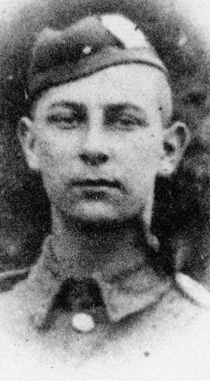

Lewis Theodor Sinclair Reid


Lewis Reid was a former John Lyon School captain, editor of the Lyonian, and talented cricketer before serving with the London Scottish. Aged just 17, he was reported missing and presumed killed during the fighting at Messines Ridge on 1 November 1914, and is commemorated on the Menin Gate Memorial.
Civilian Life - Lewis was born in Balham in 1897 and was the son of John and Annie Reid. His father worked as an accountant in an exports business, and the family later lived in Harrow. Lewis was educated at Magdalen College School in Brackley and subsequently attended John Lyon School. He was a school captain and former editor of the Lyonian magazine. In 1913 scored 100 for the school cricket team, for which he was awarded a pewter tankard. Despite this, and perhaps somewhat harshly, he was not viewed as an amazing batsman and was criticised because of this.
Lewis was the first former John Lyon pupil to fall in the First World War. In 1920, the school established a Mathematics Prize in his memory.
Military Life - Lewis served as Private 2047 with “G” Company, 1st/14th Battalion, London Regiment (London Scottish). He was 17 when his battalion entered the fighting in Belgium during the First Battle of Ypres. In late October and early November 1914, the London Scottish were committed to the fighting around Messines Ridge as German forces attacked the Allied positions. On October 30–31, 1914, German forces launched a massive assault to break the Allied lines at Messines Ridge. Desperate for reinforcements, British command rushed the newly arrived London Scottish straight up to the ridge to fill a critical gap between the British cavalry units.
Throughout Halloween night and into the early morning of November 1, 1914, Private Reid and his battalion were thrown into intense, hand-to-hand defensive fighting. They held off overwhelming numbers of German troops under relentless, close-range artillery shelling and sweeping machine-gun fire. Compounding the tragedy, the battalion was equipped with the notoriously unreliable Ross Rifle, which frequently jammed under rapid-fire conditions, forcing many soldiers to defend themselves with bayonets alone. When the battalion was finally ordered to withdraw from the ridge on November 1, nearly half of its fighting strength had been decimated. Private Reid was one of the many young soldiers cut down during this frantic, heroic stand to prevent a German breakthrough toward the Channel ports.
Lewis was reported missing during the fighting and was presumed to have died on or since 1 November 1914. His body was never recovered or identified, and he has no known grave. He is commemorated on the Ypres (Menin Gate) Memorial in Belgium.